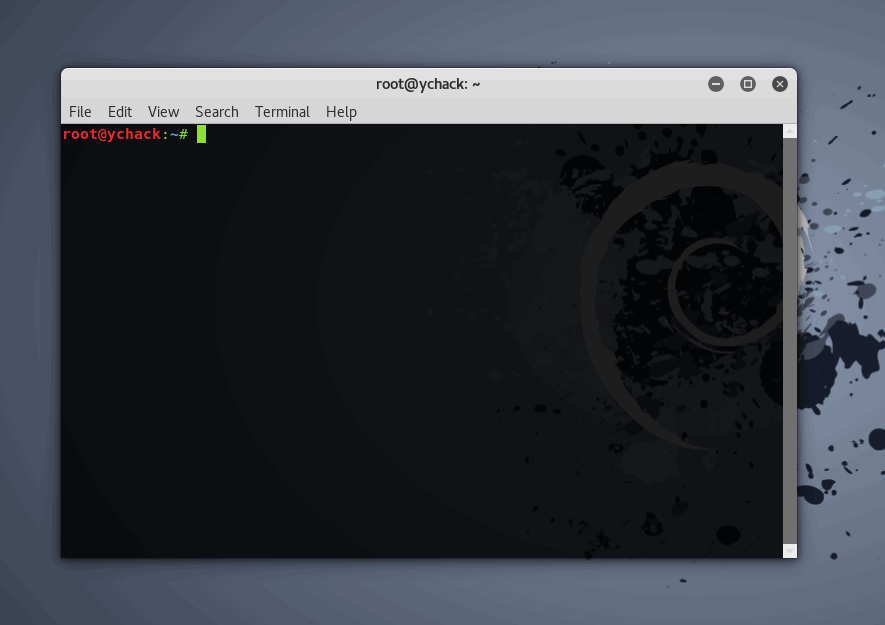
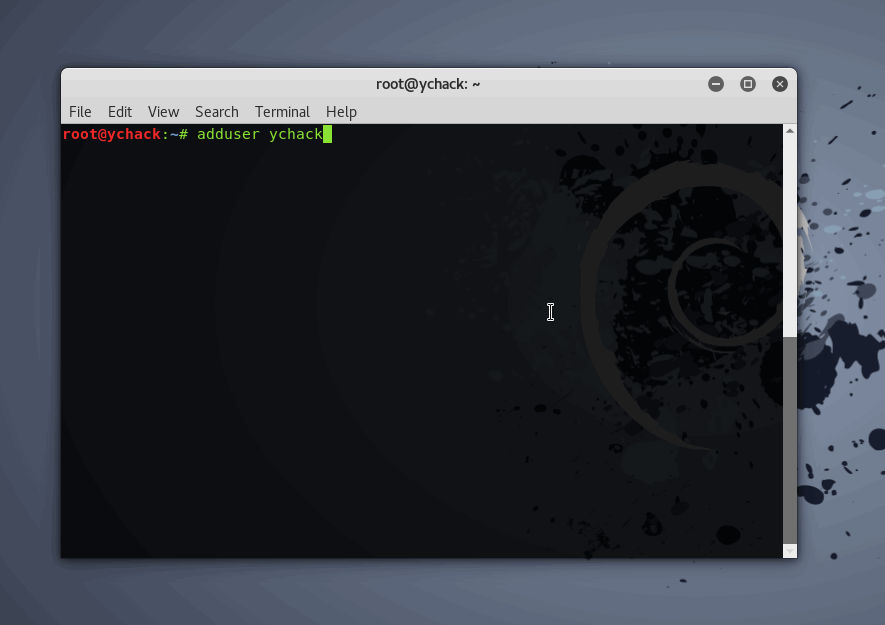
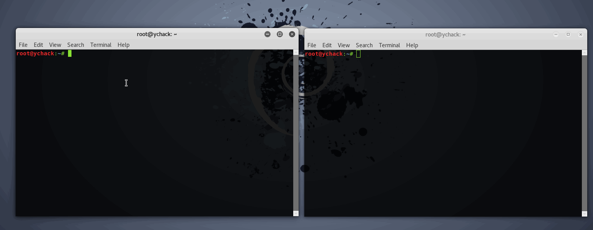
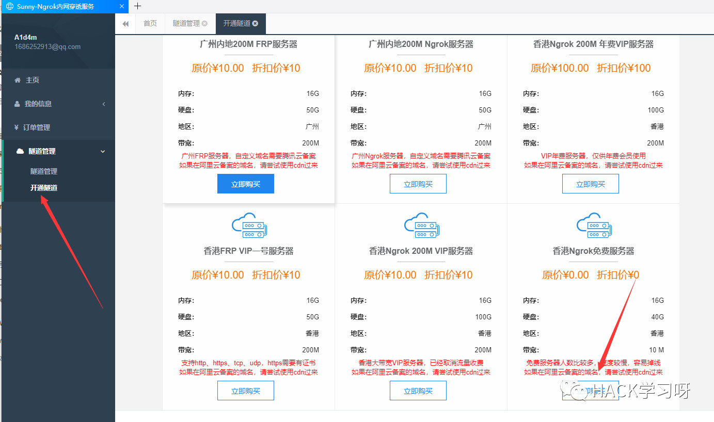
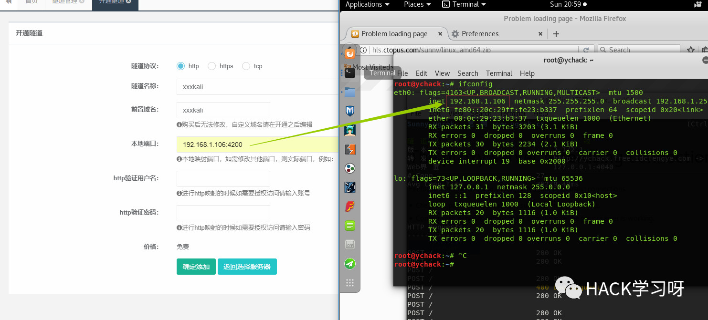
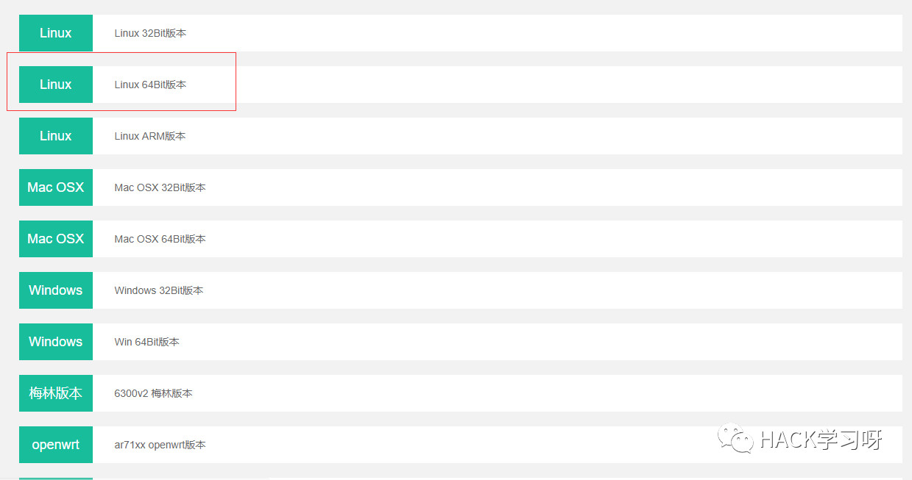
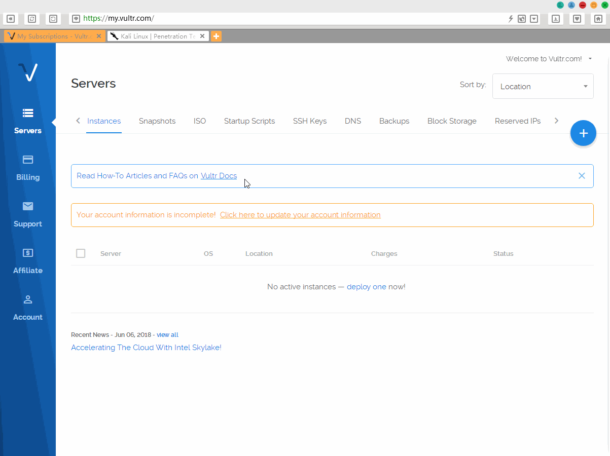
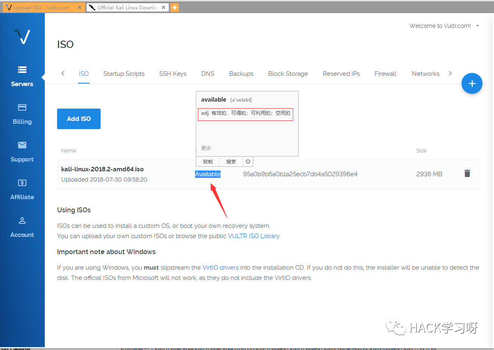
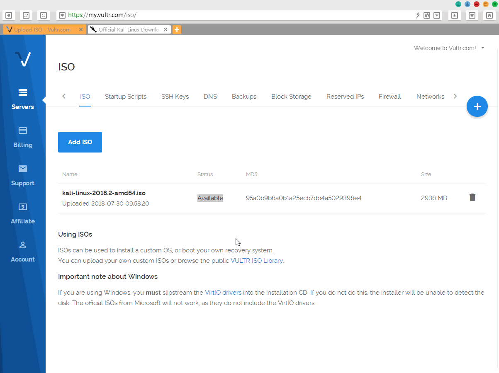

搭建WEB版Kali Linux渗透系统
你有没有想过在浏览器中运行kali？访问某个网址后，就可以轻松运行自己的kali系统对目标进行渗透。
0x00 准备工具
SSH web环境（Shellinabox）
映射工具（ngrok）
0x01 环境搭建
apt-get install shellinabox

安装完后，我们需要新建一个账户，因为shellinabox默认不允许直接用root登录，我们可以用adduser添加一个自己喜欢的账号，例：

密码输入框默认是不会显示你输入的密码的
到这里我们基本上可以运行我们的SSH WEB环境。启动后默认端口为4200。再用ifconfig获取你的kali机内网ip，再通过访问http://ip:4200/来访问你的WEB版kali。
shellinaboxd -b -t #启动ssh web环境 -b:后台启动 -t:以http方式
如果你想要让朋友也访问到你的机器，你可以采用（ngrok）外网映射，或者直接制作一台外网的kali服务器。
0x02 外网映射
到ngork官网注册登录(https://ngrok.cc/)，转到隧道开通，买那个免费的香港服务器。

协议选http，隧道名称跟前置域名自定义，本地端口写kali服务器的端口，ip写kali机器的ip，端口就写ssh web的端口4200，http验证用户名跟密码选填，最后直接点确定添加。

下载ngrok客户端(https://ngrok.cc/download.html)
由于我的kali版本是amd64的。所以选择64bit版本。

下载到kali机器里面unzip命令解压。进入隧道管理，将隧道ID复制，再执行ngrok命令开始映射。
chmod 777 sunny #如果出现其他问题可尝试赋予权限
./sunny clientid 隧道id个人感觉映射后访问很慢，执行命令也一卡一卡的，毫无体验，建议直接开台外网kali服务器。
如何制作一个kali外网服务器
一般的，在攻击目标时，我们在虚拟机用msfconsole生成木马时，会有一个疑问，怎么将kali开放成外网。总是要将内网映射到外网，否则shellcode不会弹到内网里来，很多人会嫌内网穿透非常麻烦，而新手对内网穿透更是摸不到脑，这里站长教各位Kali爱好者们如何搭建一个外网的kali服务器，免去内网映射麻烦。
#选择机房
这里站长推荐一个主机商，国外的Vultr主机商，因为支持自定义镜像，注册登录以后，我们可以直接在upload里将kali官方的下载地址放入，然后等一段时间镜像包就传好了，大概1分钟左右。
点击ISO-增加ISO-到kali的downloads下把kali最新版的下载链接填入。

一般的，出现镜像的MD5值就说明已经传好了。

#建立kali服务器
新增vps，选镜像的时候用自己上传的镜像即可。

安装的时候进noVNC安装，安装好后进入设置开启远程桌面，用VNC工具连接，或开启ssh服务也可以。